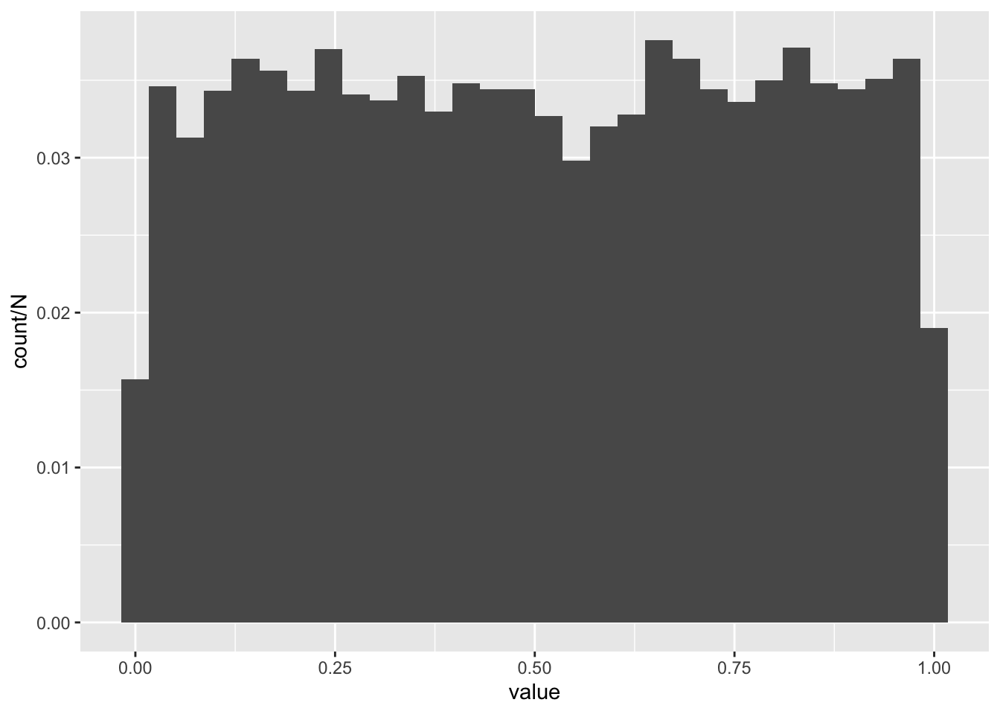

library(tidyverse)8 Introduction to inference I
8.1 Lesson preamble
8.1.1 Lesson objectives
- Develop understanding of random variables, probability distributions, and likelihood.
- Become familiar with how to simulate realizations of a random variable.
- Develop familiarity with the likelihood function and the logic of maximum likelihood.
8.1.2 Lesson outline
- Random variables, probability distributions, and likelihood
- Interpretations of probability, sources of uncertainty
- Discrete vs continuous RVs
- Common discrete and continuous probability distributions
- Simulating random variables in R
- Evaluating probabilities (and probability densities) of RVs
- Likelihood estimation and inference
- Understanding the likelihood function
- The relationship between the likelihood and log-likelihood
- Practice writing down likelihoods
As we begin to learn about probability and statistical inference, a fun quote:
Probability is the most important concept in modern science, especially as nobody has the slightest notion what it means. —Bertrand Russell, 1929 Lecture
8.2 Introduction: what’s chance … got to do … got to do … with it?
Probability and statistics are disciplines which seek to provide scientists with the tools to characterize uncertainty, and to make decisions (from betting on a particular horse in a race to deciding how to conserve a a species) under uncertainty (about the running speeds of horses in the race to the dynamics of an endangered population). How does something work, given the (finite, imperfect, incomplete, and noisy) data which are available to us? In science, we often are interested in some version of this question and use probabilistic/statistical models to help arrive at informed answers which, as more data arise, are updated. Ideally, such a process brings us closer to “the truth” even if there are issues with the modeling, the data, particular studies or contexts, etc.
Randomness that is inherit in many physical processes (especially those in ecology and evolution) makes it difficult to, given data, choose between alternative explanations for how something (say, the world) works. What are some sources of uncertainty you can think of? From measurement error to differences in how a process unfolds in time or space, probability theory and statistics provides us with tools to confront various kinds of uncertainty — and to arrive at principled, informed conclusions.
In this lecture, we will introduce key concepts in probability and statistics. These concepts (in particular, likelihood) form the backbone for future lectures and will be invaluable if you do research in quantitative disciplines such as ecology and/or evolutionary biology. The focus of this lecture is a review of probability, some important probability distributions, simulating realizations of random variables (or, equivalently, draws from their probability distributions), and the basic idea of point estimation. Next class, we will extend what we cover today to describe the uncertainty/confidence around our “best” guess(es) for a parameter (or set of parameters) – that is, we will cover the basic theory of interval estimation and its connections to hypothesis testing.
8.2.1 Interpretations of probability
Before we dive into a review of probability, it is useful to step back and ask: what do we mean when we make probabilistic statements? (Think about it for a minute and discuss with your neighbor.)
Some common interpretations include:
Finite frequency: probability is the empirical frequency at which particular outcomes or events unfold. If I flip a coin 10 times and get heads each time, the probability of getting heads is 10/10 and tails is 0/10. Basically, in this interpretation, a probability measures of the possibilities how many are “favorable” (in that a particular outcome or set of outcomes occured). This is not how scientists commonly think about probability, but it does bear resemblance to how they do inference.
Limiting frequency: probability is the long-run frequency at which particular outcomes or events unfold. The probability of flipping a fair coin and landing heads is 1/2 if we flip the coin over and over and over again and, for each flip, we tally if the coin landed on heads or tails. If we keep adding to a string of Hs and Ts, the change in the frequency of Hs in the string will become smaller and smaller; the value to which it converges is what we would call the probability of flipping a coin and it landing on heads. This a widely-accepted interpretation of probability, and comes in a few flavors…
Propensity: probability is a physical disposition of an aspect of the world to yield a particular set of outcomes. The probability that the coin turns up heads is a reflection of its disposition (or habit) to do so.
Belief: probability reflects a measure of personal (or objective, under some interpretations) confidence that a particular set of outcomes or events have unfolded, or will unfold. This is the basis for Bayesian statistics, and it provides a very natural way to think about uncertainty in parameters (such as the mutation rate in humans). Under frequency-based interpretations of probability, parameters are not random – they are fixed, and we try to estimate what they are from the data. For Bayesians, parameters can be random because our belief about the values they assume are not fixed, but changing depending on the data which are available.
For more on this, check out the Stanford Encyclopedia of Philosophy.
8.3 Review of probability!
Consider an experiment which gives rise to a set \(\Omega\) of outcomes. This set of outcomes is called the sample space. The space of all events is formed by considering all possible combinations of outcomes (or, in some cases, some combinations but not all for technical reasons). Suppose the sample space is \(\Omega = \{1,2,3,4\}\), so that the experiment might be rolling a four-sided die. One event is observing 2 or 3 upon rolling the die; this event is denoted \(\{2,3\}\), and is only one of many such events!
8.3.1 Challenge question
What are the other events that can happen, if the outcomes are 1, 2, 3, and 4? Don’t forget the event where nothing happens!
8.3.2 Axioms of probability
Probability allows us to assign to each event (\(\{2,3\}, \{\}, \{1,2,3,4\}\), etc.) a value between zero and one capturing how likely that event is to occur under the experiment we have preformed. We also need certain conditions on this function to be met:
- The probability of any event must be \(\geqslant 0\). Negative probabilities make no sense!
- The probability of the event \(\Omega\) must be \(=1\). Something must have happened!
- Countably many mutually exclusive events \(A_1,A_2,\dots,\) must satisfy the following:
\[\Pr (A_1 \text{ or } A_2 \text{ or } A_3 \text{ or } \cdots) = \sum_{i=1}^\infty \Pr (A_i)\]
\(A_1,\dots,A_n,\dots\) are mutually exclusive if \(A_i, A_j\) do not share outcomes for all \(i \neq j\). (The events \(A_1 = \{1,2\}\) and \(A_2 = \{3,4\}\) are distinct, while the events \(A_1 = \{1,3\}\) and \(A_2 = \{3,4\}\) are not..)
A sample space, set of events formed from individual outcomes in the sample space, and a function on those events which satisfies the conditions above are the ingredients we need to define probability. Moreover, this mathematical definition is comparable with all of the interpretations above. Differences between interpretations are primarily philosophical in nature.
8.3.3 An example
In the case of rolling a four-sided die, the probability of all events can be calculated (due to third condition) by specifying what the probability of each outcome is. When there are countably many outcomes (i.e., we can count them even if there are infinitely many), the probabilities of individual outcomes tell us about probabilities of events. For example,
\[\Pr(\{1,2,3,4\}) = \Pr(1 \text{ or } 2 \text{ or } 3 \text{ or } 4) = \Pr(\{1\}) + \Pr(\{2\}) + \Pr(\{3\}) + \Pr(\{4\}) = 1\] \[\Pr(\{1,2,3\}) = \Pr(1 \text{ or } 2 \text{ or } 3) = \Pr(\{1\}) + \Pr(\{2\}) + \Pr(\{3\}) = 0.75\]
\[\Pr(\{1,3\}) = \Pr(1 \text{ or } 3) = \Pr(\{1\}) + \Pr(\{3\}) = 0.5\]
8.3.4 Challenge question
Suppose \(\Pr(\{1\}) = 0.2, \Pr(\{2\}) = 0.3, \Pr(\{3\}) = 0.25,\) and \(\Pr(\{4\}) = 0.25\), i.e., the die is not fair but not horribly biased to one side. What is the probability of getting a 2 or 3 if we were to roll a die with these properties?
8.4 Random variables!
A random variable is the (uncertain) outcome of a random experiment; more precisely, it is a function from the sample space (i.e., outcomes in the sample space) to the real numbers. Random variables are often denoted with capital letters, like \(X, Y, B\), and \(T\). In the previous example, the random variable which we were (secretly!) working with was a function that indicated what the outcome of the die-rolling experiment was – i.e., if we got a 1, 2, 3, or 4. We can summarize the probability the random variable, \(X\), assumes particular values using its probability mass function:
\[\Pr(X=k) = p_k \hspace{12pt} (p_k =0.25 \text{ when the die is fair})\]
Can you think of other ways to summarize this information in this function? There are several, but a common choice is the cumulative probability distribution function, which is defined as the cumulative probability \(X\) assumes a value up to \(x\). When \(X\) is discrete, this is
\[F(x) = \sum_{k=1,2,\dots,x} \Pr(X=k).\]
When \(X\) assumes values in a continuous space, the sum is replaced with an integral of something called a probability density function. Integrals are just fancy types of sums, so we don’t have to worry too much about the differences. (If you are interested in learning more about the math, ask Mete! He loves this stuff…)
The key difference between discrete and continuous random variables and probability distributions is the following. For a discrete random variable, as we have seen, the probability of an event is a sum over the outcomes associated to that event. For continuous random variable \(Y\), the probability of an event \(A\) (for example, observing any number between 0.3 and 0.7) is
\[\Pr(Y \in A) = \int_A f(y|\theta) \text{d} y.\]
\(f(y|\theta)\) called the probability density function for the random variable \(Y\). It is the continuous analogue of the probability mass function for discrete random variables. (Note: we can express the above in terms of \(Y\)’s cumulative distribution function, too.)
8.4.1 Challenge question
Suppose we roll a 6-sided die such that, with probability \(p_k\), it lands on \(k\). The outcome of this experiment is denoted \(X\). Suppose \(p_1 = p_2 = p_3 = 0.1\). Use the cumulative distribution function for \(X\) to get the probability it lands on \(k \leq 3\).
8.5 Examples of random variables
Common examples of random variables include:
- The time between events. For example, the time (in seconds or minutes) between cars that pass Mete on Harbord is a random variable. Is it discrete or continuous?
- The number of individuals in a sample of fixed size with a specific property. For example, the number of lizards on an island that are of reproductive age, in a sample of \(N = 100\) individuals collected, is a random variable. Same for the the number of birds in North America that are currently infected with H5N1, highly pathogenic avian influenza. Are these variables discrete or continuous?
- The number of occurrences of a rare event. For example, the number mutations on a newly-replicated strand of viral DNA or RNA, which are induced by errors in the polymerase and associated proof-reading machinery, is a random variable. Is it discrete or continuous?
- Traits which vary in a population of individuals. For example, the mass (in g) of penguins in Antarctica is a random variable. Is it discrete or continuous?
All of these random variables have probability distributions.
8.6 Common probability distributions
Examples of discrete probability distributions include:
- The Poisson distribution. This distribution models the number of occurrences of a rare event. It has one parameter: the rate \(\lambda\) at which such events occur.
- The Binomial distribution. This distribution is associated to a random variable which counts the number of “successes” or “failures” in \(N\) trials, where the success probability is \(p\).
- The Hypergeometric distribution models the probability that, if we draw \(n\) objects from a population of size \(N\) where \(K\) of the objects have a specific attribute without replacement, that we see \(k\) objects in our sample with the attribute.
- The Geometric distribution. If we do many trials, each of which are independent and have probability of “success” \(p\), a random variable that has a \(\text{Geometric}(p)\) distribution counts the number of tries until a success occurs.
- The Negative binomial distribution models the number of trials until \(r\) successes occur, if the success probability in each trial is \(p\).
Note: when \(N\), \(K\) are large relative to \(n\) and \(K/N\) is not too close to 0 or 1, the Binomial and Hypergeometric distributions are similar and its often advantageous to use the former (because it has a nicer probability distribution function, fewer parameters).
Examples of continuous probability distributions include:
- The Exponential distribution models the time in-between events, if the events occur at rate \(\lambda\). What is means for events to occur at rate \(\lambda\) is that, over a small interval of time \(\Delta t\), an event occurs with probability approximately \(\lambda \Delta t\). The larger the \(\lambda\), the more frequently the event occurs…
- The Uniform distribution models outcomes where all occur with equal probability.
- The Normal distribution is often used to model continuous observations that are sums of a large number of small, random contributions (e.g, individual alleles to a trait).
- The Log-normal distribution models continuous observations such that their natural logarithm follows a Normal distribution. In other words, if \(Y \sim \text{Lognormal}(\mu,\sigma^2)\), then \(\ln Y \sim \text{Normal}(\mu,\sigma^2)\) where \(\mu\) is the mean.
- The Gamma distribution is commonly used to describe the waiting time to the \(r\)th event of a particular type. It is a flexible distribution which can be used in a number of contexts, especially when it is not clear what the right probabilistic model for observations may be.
8.6.1 Challenge
For each of the distributions above, think of random variables (e.g., the number of brown bears with body sizes \(>\) 100 kg) with that distribution? Discuss with your neighbors.
8.7 Simulating random variables
One of the most useful things about R is the fact it allows for efficient and rapid simulation and evaluation of random variables we care about. This means that we can assess the probability that our data would arise, ask questions about sample sizes required to realiably estimate parameters we care about, etc.
For example, can simulate a large realizations of a uniform random variable using runif().
N <- 10000
realizations_N_uniform <- runif(n = N, min = 0, max = 1)
data.frame(value = realizations_N_uniform) %>% ggplot(aes(x = value, y = ..count../N)) + geom_histogram()`stat_bin()` using `bins = 30`. Pick better value with `binwidth`.
We can evaluate the probability one realization arose from, say, the Uniform(0,100) distribution using dunif(). By evaluate, we mean return the probability density the observation would arise.1
dunif(realizations_N_uniform[1], min = 0, max = 100)[1] 0.01Similar syntax (r followed by the name of the distribution when we simulate and d followed by the name of the distribution) for other commonly distributions. For example, dbinom() evaluates the probability an observation arose from the Binomial distribution with a specific number of trials and success probability, and rnorm() samples from the Normal distribution with a specific mean and variance. Parameters of the focal distribution are supplied as arguments to the r___() and d___() functions…
8.7.1 Challenge
Write a function which returns \(n\) realizations of a random variable that is 0 with probability \(1-p\) and 1 with probability \(p\). Such a random variable is said to have a Bernoulli distribution, or be Bernoulli. Call the function bernouli and give it two inputs, \(p\) and \(n\).
Hint: the Bernouli distribution is a special case of the Binomial with \(N=1\), i.e., one trial. Read the documentation for rbinom() to figure out what the names for \(N\) and \(p\) are…
8.7.2 Challenge
Write a function to, for a vector of observations \(x\), evaluate the “probability” (i.e., the probability density) that each observation arises from a Gamma distribution with shape and scale parameters \(\alpha\) and \(\beta\), respectively. Call the arguments of the function x, alpha, and beta.
Test the function using the vector x <- c(2.77776, 3.56, 9.11) and \(\alpha = \beta = 0.2\).
8.8 All about likelihood!
So far we have seen:
Random variables model experiments with uncertain outcomes and come in many flavors. They are the main workhorse of probability and statistics.
Functions in base R allow us to conveniently and easily simulation realizations (i.e., draws) of many random variables. When the probability distribution of a random variable may be hard to write down, transformations of other random variables may provide a means to generate random numbers.
Now, we turn our attention to the central problem of statistics: determining what processes and parameters gave rise to data (estimation), and quantifying uncertainty in those estimates (inference). Estimation and inference based on the likelihood function is the basis/foundation for most statistical procedures used in the sciences (including all kinds of linear models).
8.9 The likelihood function
The idea is as follows. Given data \(x_1,x_2,\dots,x_n \sim f(x|\theta)\), we want to estimate \(\theta\), i.e., to determine what parameters were mostly likely to have given rise to the data (under the assumption \(f\) models the data generating process). We do this by maximizing the likelihood function
\[L(x_1,\dots,x_n|\theta) = f(x_1|\theta) \cdots f(x_n|\theta) = \prod_{i=1}^n f(x_i|\theta),\]
which is formed under the assumption \(x_1,\dots,x_n\) are independent. (There are methods that accommodate for dependent data, but we will not get into them here.) A couple things to notice:
- The likelihood is formed by simply plugging in the data into the probability distribution function from which they jointly arose. (When the data are independent, the joint probability distribution function is the product of the individual distribution functions.)
- This formulation of the likelihood is agnostic to weather or not the observations are discrete or continuous — regardless, the distribution of the data is denoted \(f(\cdot|\theta)\)!
- The likelihood function is a function of the parameters \(\theta\), but NOT of the data. This is because the data has already been collected and is, thus, fixed.
- Amazingly, the likelihood contains all of the information in the data about the parameters.
- Viewed as a function of \(\theta\), the likelihood tells us how likely each set of parameter values is to have given rise to the data, given the data. (The \(|\) symbol means given…)
Most importantly, the value(s) of parameter(s) \(\theta\) which jointly maximize \(L\) (i.e., have the highest likelihood of generating the observed data) is called the maximum likelihood estimator. It is often denoted \(\hat{\theta}_{\text{MLE}}\), and is our best guess for the parameter(s) which generated the data.
8.9.1 The log-likelihood
It is often easier to work with the log-transformed likelihood function
\[\ln L(x_1,\dots,x_n|\theta) = \ln \prod_{i=1}^n f(x_i|\theta) = \sum_{i=1}^n \ln f(x_i|\theta).\]
It has a maximum where the regular likelihood does, because the logarithm is an increasing function. Also, products are much more unruly (not to mention numerically unstable) than sums…
8.9.2 Challenge
Write down the likelihood function for \(x_1 = 12, x_2 = 14, x_3 = 14\), assuming that the data are independent and identically distributed according to a \(\text{Binomial}(N,p)\). Then, write the log-likelihood function for these data.
The probability mass function for the Binomial distribution is
\[\Pr(X=x) = f(x|N,p) = {N \choose x} (1-p)^{N-x} p^x.\]
8.9.3 Challenge
Write down the likelihood function for \(x_1 = -1.23, x_2 = 0.2\), assuming that the data are independent and identically distributed according to a \(\text{Normal}(\mu,\sigma^2)\). Then, write the log-likelihood function for these data.
The probability density function for the Normal distribution is
\[f(x|\mu,\sigma^2) = \frac{1}{\sqrt{2 \pi \sigma^2}} \text{exp} \bigg(-\frac{(x-\mu)^2}{2\sigma^2} \bigg)\]
A technical and somewhat confusing thing about probability: if a continuous random variable assumes the value \(x\), the probability density function at \(x\) can assume a value greater than 1, but the probability of drawing \(x\) exactly is zero. This means, if Mete throws a dart at a board, the probability it lands at a particular point is zero — even though the probability density associated to this experiment would likely assume a value \(>0\). While this seems strange, and it is, there is a simple way to understand what’s going on. The density must be integrated over a small region around the outcome to get an honest-to-god probability. In other words, the probability of getting \(x\) exactly is zero, but the probability of getting a value from \(x-\delta\) to \(x+\delta\) is the integral of the probability density over this region.↩︎